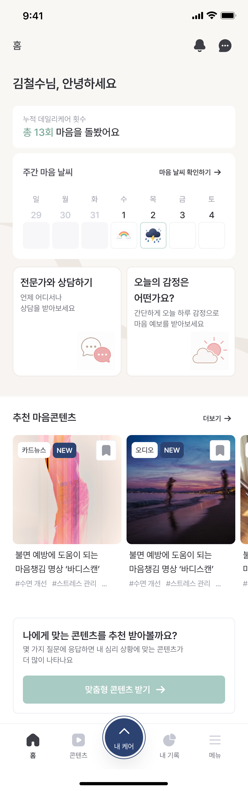
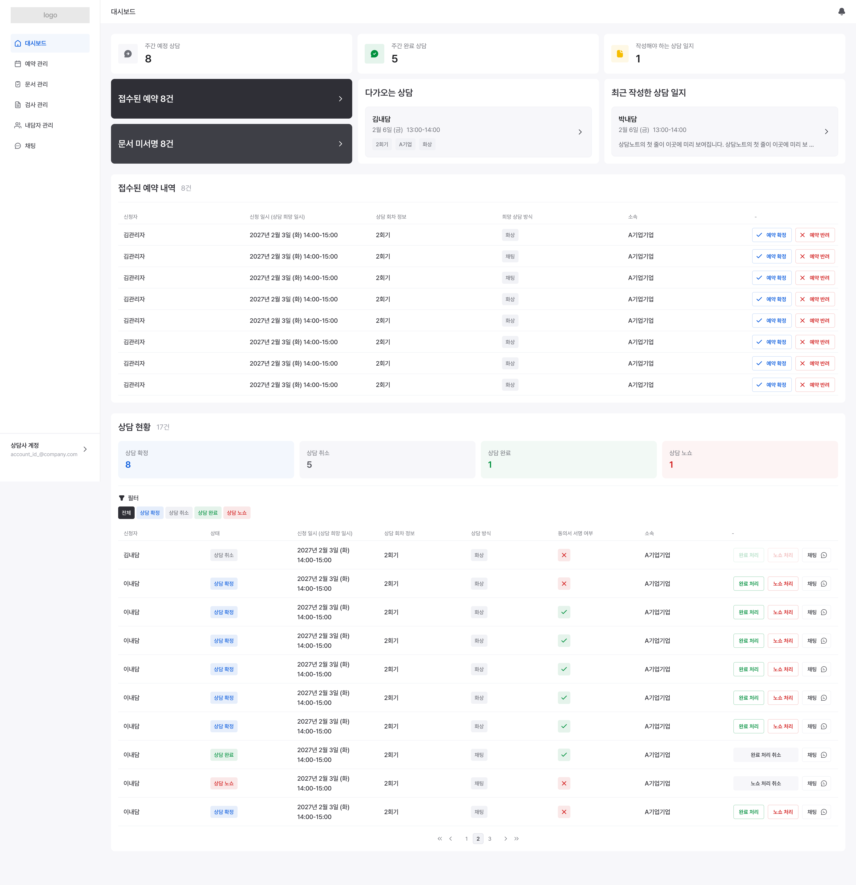
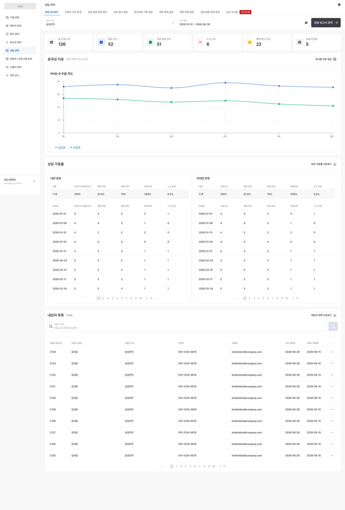
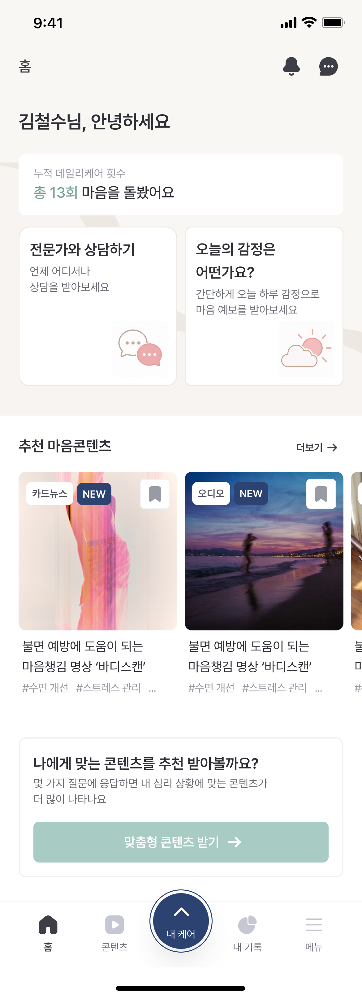
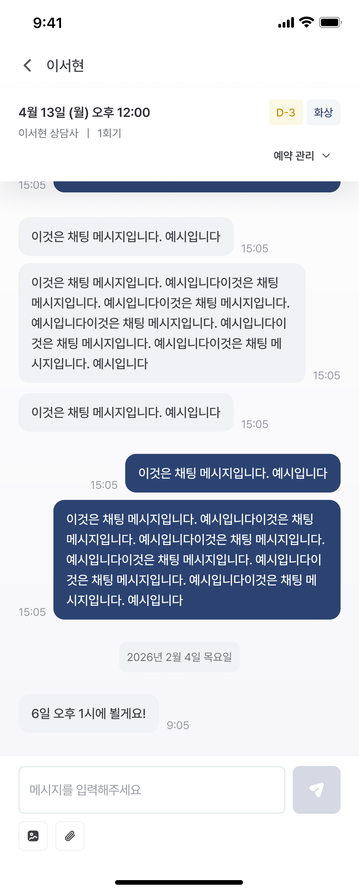
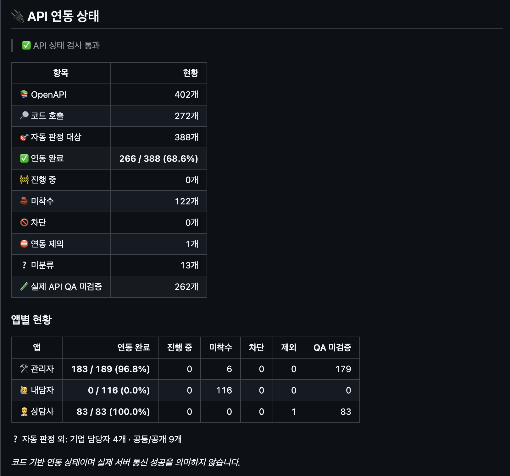

01 / 프로젝트
따로 움직이던 평가·상담 업무를 한 흐름으로
기존에는 수기로 처리하는 운영 업무가 많았고, 상담사도 여러 외부 도구를 사용하고 있었습니다. 건강검진·마음건강 평가 결과를 상담과 연결하고, 개인에게 맞는 미디어 콘텐츠까지 이어주는 서비스도 필요했습니다. CIMCARE 3.0은 임직원 앱과 상담사·관리자 웹을 함께 설계해 이 흐름을 만드는 프로젝트입니다.
저는 프로젝트 전반의 PM을 맡아 요구사항 확인부터 범위·일정·변경 영향까지 관리했습니다. 기업정신건강연구소와는 평가·상담 운영 기준을, 삼성 클라우드 담당자와는 인프라 관련 조건을 협의했습니다. 화면과 구현 방식은 디자이너·개발팀과 맞췄고, 프론트엔드 개발과 API 연동 현황 도구 구현에도 직접 참여했습니다.
하나의 운영 흐름, 세 사용자의 화면
Figma 설계 화면


임직원 앱 화면 2개 더 보기


평가 결과가 상담과 기업 보고로 이어지는 흐름을 정리했습니다.
요구사항은 문서·엑셀·결과지 예시·메일에 나뉘어 있었습니다. 연구소의 운영 언어를 화면 동작과 개발 기준으로 옮기면서, 같은 ‘완료’나 ‘평균’을 서로 다르게 이해하던 지점을 먼저 확인해야 했습니다.
02 / 핵심 사례 · 첫 오픈 범위 조정
외부 상담사 접속이 늦어질 때, 무엇을 첫 오픈에 남길까
상담사는 내부 인력뿐 아니라 외부 인력도 사용할 예정이었습니다. 다만 외부 상담사의 접속 방식과 다중 인증은 보안 검토가 끝나지 않아 첫 오픈 일정에 영향을 줄 수 있었습니다. 외부 상담사 기능을 통째로 빼면 나중에 권한과 데이터를 다시 설계해야 했고, 승인되지 않은 접속을 먼저 열 수도 없었습니다.
외부 상담사 역할·권한·데이터 구조는 유지하되 로그인은 비활성화
접속 방식과 인증 기준이 정해진 뒤 별도 확인
제가 맡은 일은 ‘미룰 기능’만 정하는 것이 아니었습니다
고객·보안·개발 논의에서 외부 접속을 첫 오픈의 필수 조건에서 분리하고, 그 결정이 로그인·권한·배포 범위에 주는 영향을 정리했습니다. 고객 측 회의에서 첫 오픈은 내부 상담사만 사용하는 것으로 확정됐습니다. 저는 외부 상담사 역할과 권한은 설계에 남기고, 접속 활성화만 보안 확정 이후로 분리한 내용과 후속 작업을 명세에 반영했습니다.
03 / 요구사항 관리
문서가 있다는 것과 개발 기준이 정해졌다는 것은 달랐습니다
처음에는 제품별 요구사항 회수 양식과 가이드를 공유했습니다. 고객이 전체 재작성의 부담을 설명하자 상담관리 초안을 제공하고 확인할 범위를 안내했습니다. 이후에도 원자료와 내부 명세를 대조하며 확정·수정·보류할 내용을 구분했습니다.
고객 원문에서 개발 과제까지 이어지는 공통 기준
GitHub 기획 저장소에 고객 원문, 회의 결정, 기능·화면 명세, 단계별 범위를 연결했습니다. 디자이너와 개발자가 같은 결정을 찾아볼 수 있게 하고, AI가 작업할 때도 원문·확정 사항·미결정 사항을 구분하도록 규칙을 뒀습니다. 개발 과제를 넘길 때는 관련 명세와 입력·예외·완료 기준을 함께 적었습니다.
명단이 없어도 참여할 수 있는 가입 경로
임직원 명단을 미리 제공할 수 있는 기업과 개인정보 정책상 어려운 기업이 있었습니다. 그래서 사전 등록 명단과 가입자를 맞추는 경로, 기업이 배포한 링크로 가입하면서 기업·평가 차수를 연결하는 경로를 함께 기획했습니다. 이 내용은 가입·차수 운영 기준으로 정리했으며, 여기서는 설계한 범위를 소개합니다.
6개 분야에서 원문·화면·명세가 어긋난 지점을 질문으로 정리
첫 회신 뒤에도 해석이 필요한 항목에 적용안·선택지를 붙여 재확인
콘텐츠·평가·결과지·상담·알림·권한 등 6개 분야에서 고객이 확인해야 할 질문 42개를 정리했습니다. 각 질문에는 관련 문서와 위치를 붙였고, 첫 회신 뒤에도 해석이 필요한 15개 항목은 현재 적용안과 선택지를 제시해 다시 확인했습니다. 예약 변경·동의서·벤치마크 산식처럼 후속 구현에 영향을 주는 항목을 우선 확인했습니다.
| 운영 요구 | 제안하고 합의한 범위 | 남는 제약 |
|---|---|---|
| 국가 비교값 갱신·이력 관리 | 고정값을 유지보수 요청으로 갱신하고 변경 전후 값·일자·요청자를 기록. 관리자 직접 편집 화면은 두지 않음 | 갱신 시 개발·유지보수 대응 필요 |
| 프로그램 다시하기·과거 기록 | 사용자에게 최신 결과를 표시하고 이전 기록은 내부 보관. 사용자용 과거 회차 조회 화면은 두지 않음 | 사용자가 과거 회차를 직접 조회할 수 없음 |
회신을 받으면 질문별로 확정된 기준, 내부 해석, 추가 확인 사항을 나누고 관련 결정·기능 명세·후속 작업에 연결했습니다. 답변을 받았다고 모두 확정으로 처리하지는 않았습니다.
04 / 핵심 사례 · 상담 운영 설계
상담사의 실제 업무를 상태와 화면 동작으로 풀었습니다
상태 모델오늘 상담이 끝나도, 전체 상담은 계속될 수 있습니다
‘완료’가 한 번의 상담과 전체 상담 과정에 섞여 있었습니다. 한 내담자의 여러 회기 가운데 오늘 회기만 끝났는데도 전체 상담이 종결된 것처럼 읽힐 수 있었습니다. 검토한 안은 단일 상태에 ‘진행/종결’ 플래그를 더하는 방법과 회기·전체 상담의 상태를 별개로 두는 방법이었습니다.
단일 상태+플래그만으로는 여러 회기가 같은 상담에 속하는지, 재신청·중단을 어떻게 집계할지 다시 모호해집니다. 그래서 회기 상태와 상담 케이스 상태를 두 축으로 분리하고, 상담 완료 화면의 ‘상담 진행/상담 종결’ 선택이 각각 어떤 상태를 바꾸는지 명세에 적었습니다. 회기 상태 7개를 5개로 줄인 결정은 별도로 관리했습니다.
| 상담 완료 화면의 선택 | 오늘 회기 | 전체 상담 케이스 |
|---|---|---|
| 상담 진행 | 완료 | 상담진행 유지 |
| 상담 종결 | 완료 | 상담종결로 변경 |
이 분리는 상담사 화면뿐 아니라 운영 집계에도 영향을 줍니다. 회기 완료·노쇼는 회기 단위, 상담 종결·중단은 케이스 단위로 읽어야 합니다. 결정 자체는 확정됐지만, 케이스 축의 최종 용어와 중단·재방문 처리 일부는 추가 확인 사항으로 남겼습니다.
운영 정책동의서가 필수라고 예약부터 막아야 하는 것은 아니었습니다
저는 신청 단계에서 동의를 완료하도록 제안했지만, 고객은 미작성 상태에서도 예약을 허용하고 첫 상담 전에 동의를 받는 운영 방식을 설명했습니다. 방문·접속 후 상담사가 안내할 수 있지만, 동의 없이 상담을 진행하는 것은 아니었습니다.
예약은 가능하지만 첫 상담 전에는 동의를 마쳐야 합니다. 이 순서로 고객과 기준을 맞췄습니다.
신청 차단안을 철회하고 명세를 수정했습니다. 당시 구현은 이미 예약을 허용하고 예약 확정 후 동의서를 전달하고 있어 기존 흐름은 유지했습니다. 추가로 필요한 앱 안내, 상담사 화면의 동의 확인, 관련 디자인 수정을 후속 작업으로 나눴습니다.
05 / 통계 기준
같은 ‘평균’도 누구를 어떻게 세는지에 따라 달랐습니다
고객이 기업별 평균을 같은 비중으로 합산하는 방식에 의문을 제기했습니다. 저는 개발 현황 대조 내용을 정리하고, 단순 평균·수검자 수 가중 평균·개인별 최신 결과 평균을 숫자 예시와 함께 비교할 수 있도록 확인표에 담았습니다.
| 비교안 | 계산 기준 | 확인할 문제 |
|---|---|---|
| 평균의 단순 평균 | 기업·차수별 평균에 같은 비중 | 참여 인원이 달라도 동일 비중으로 반영 |
| 수검자 수 가중 평균 | 기업·차수별 참여 규모 반영 | 반복 참여자의 중복 처리 기준 필요 |
| 개인별 최신 결과 평균 | 동일인당 최신 결과 1건 | 최신 결과를 기준으로 삼는 것이 운영 의도에 맞는지 확인 |
고객은 가중 방식을 선택하면서 동일 연도 최초 완료 결과 1건만 집계하라는 조건을 추가했습니다. 제가 제시한 ‘최신 결과’와 달라, 산식 이름만 채택하지 않고 집계 대상·중복 처리 규칙까지 명세에 반영했습니다. 이후 결과는 보존하되 해당 연도 통계에서 제외하도록 백엔드 후속 작업에 연결했습니다.
콘텐츠 평균 시청시간도 클릭 조회수와 실제 측정된 재생 건수를 구분해 분모를 확인했습니다. 이 부분은 고객 기준을 확인한 뒤 명세·구현 정합 작업이 남아 있습니다.
06 / 프로젝트 실행 관리
일정뿐 아니라, 무엇을 근거로 진행됐다고 볼지도 관리했습니다
변경 요청을 화면·PDF·선행 작업의 영향으로 나누기
디자인 변경 요청을 검토할 때 컬러·일러스트·개인결과지·스티커를 나누어 확인했습니다. 개인결과지는 웹 화면뿐 아니라 PDF 출력 구현과 다른 화면의 확정에도 영향을 받아, 항목별 예상 소요기간과 선행 조건을 정리했습니다. 협력사 피드백을 받아 고객 회신안을 보완했습니다.
| 자료 | 정리한 내용 | 구분한 상태 |
|---|---|---|
| 6월 개략 WBS | 기획·개발·테스트·배포, 담당 영역, 월·주차별 일정 | 확정 납기가 아닌 일정 초안 |
| 7월 진행 현황 보고 | FE·BE 계획 대비 현황, 실제 연동, 외부 의존·검토 일정 | 구현 진행과 외부 확인 사항 |
| 9월 통계 DB 검토 | 구현된 기능·저장 가능한 데이터·추가 작업·정책 확인 | 개발 준비와 운영 검증 |
코드에서 API 연동 현황을 다시 계산하는 도구 구현
API 현황 자동화에는 다른 문제가 있었습니다. 상태 파일의 갱신이 실패해도 문서는 다시 게시될 수 있어, 코드가 바뀌었는데 표에는 예전 상태가 남았습니다. 저는 OpenAPI 명세와 현재 소스 전체를 대조해 API 호출·화면 연결 근거에서 연동 상태를 재계산하도록 바꿨습니다.
코드에서 계산한 연동 상태와 사람이 기록한 실제 QA를 함께 보고합니다. Confluence 갱신은 동기화 설정에 따라 실행됩니다.
실제 API 현황 보고 화면 보기 2026.09.20 제공 자료

집계 결과를 CI 보고서에 넣고, 성공한 CI의 기준 커밋을 사용해 Confluence의 자동 관리 영역을 갱신하도록 구성했습니다. 보고서에서는 코드 연결과 실제 통신 QA를 따로 보여줍니다.
07 / 산출물과 결과
운영 기준을 정하고 개발 작업으로 연결했습니다
| 산출물 | 확인된 변화 | 결과 범위 |
|---|---|---|
| 요구사항 확인표·결정 기록 | 모호한 운영 요구에 적용안을 제시하고 고객의 선택·수정 내용을 추적 | 주요 기준 합의, 일부 추가 확인 |
| 상담·통계 기능 명세 | 회기/케이스 분리, 동의 시점, 집계 대상·중복 기준 구체화 | 관련 명세 반영, 후속 구현·QA 남음 |
| WBS·현황·변경 영향 자료 | 담당 영역과 진행 상태, 외부 의존·선행 조건을 구분해 공유 | 일정·변경 영향 협의 자료 |
| API 연동 현황 도구 | 소스 기반 재계산과 앱별 보고, 코드 연동과 QA 분리 | 구현 코드·보고 화면 확인 |
판단을 바꿔야 했던 경험도 있었습니다
기업결과지의 상세 예시를 처음에는 큰 변경으로 판단했지만, 고객은 기존 자료를 다시 설명한 것이라고 정정했습니다. 원자료를 재검토한 뒤 해석 차이와 Figma 반영 부족을 구분해 회신했습니다. 새로운 요청처럼 보여도 먼저 원래 합의와 실제 반영 상태를 대조해야 한다는 점을 배웠습니다.
외부 상담사 접속은 첫 오픈에서 분리하되 권한 구조는 남겼고, 상담 완료는 회기와 전체 상담에 각각 다른 뜻으로 정의했습니다. 이런 결정이 회의에서 끝나지 않도록 명세와 화면 규칙에 반영하고, 개발팀이 이어서 확인할 작업을 정리했습니다.